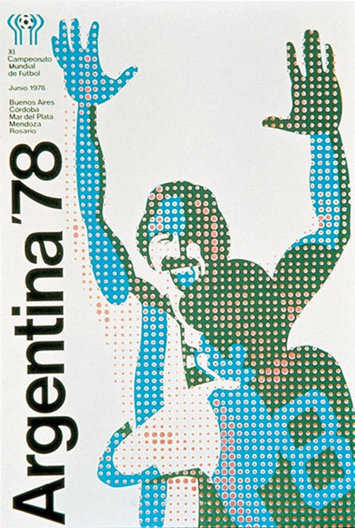
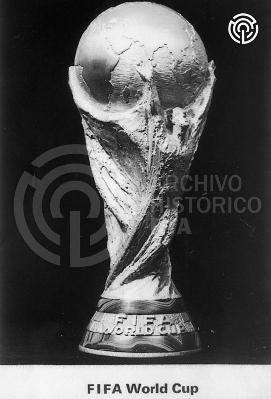
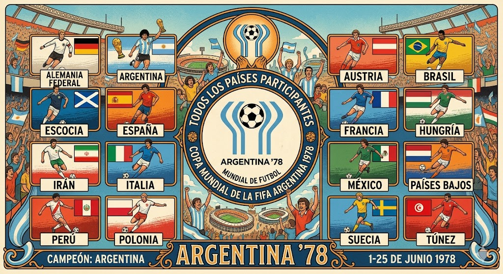
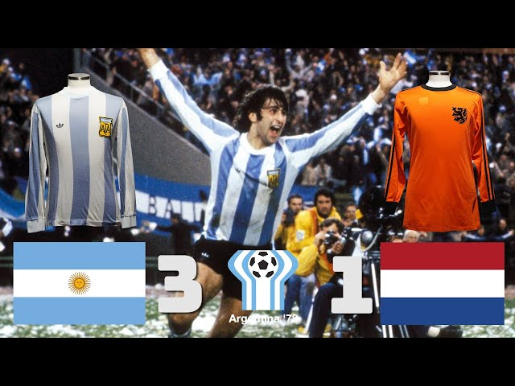
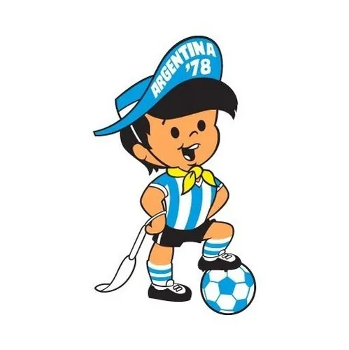

MUNDIAL ARGENTINA 1978

Seleccion Campeona del Mundo

Poster oficial del Mundial de Argentina 1978

Trofeo del Mundial de Argentina 1978

Album de cromos del Mundial de Argentina 1978

Balon oficial del Mundial de Argentina 1978

Participantes

Estadisticas de Argentina 1978
Estadios del Mundial Argentina 1978
Estadio Monumental

Estadio Chateau Carreras

Gigante de Arroyito

Estadio José Amalfitani

Estadio Malvinas Argentinas

Estadio Mundialista de Mar de Plata
Tercer puesto del Mundial de Argentina 1978

Final del Mundial de Argentina 1978

Mascota del Mundial de Argentina 1978

Goleadores de Argentina 1978